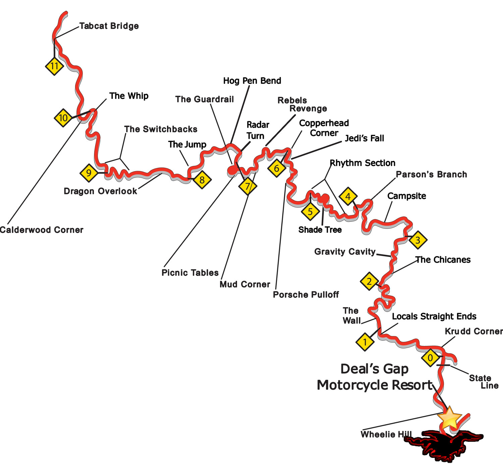

US 129 Tail of the Dragon
Maryville lodging for riders, drivers, photographers, and car clubs
Tail of the Dragon is known for 318 curves in 11 miles on US 129. A Maryville stay gives you a calmer place to regroup before or after the drive.
Open Dragon trip planner